Eat to Lose
(how to lose weight by eating more... more of the right food)
Hi, I'm David Alsieux. Today I’m sharing a new way to lose weight and satisfy cravings with my 3-Step 'Eat to Lose' System.
I understand how overwhelming weight loss can be when you have a demanding job and family life to balance.
We all know what to do:
"Avoid sugar, including carbs"
"Eat less, move more"
The advice seems simple enough on the surface. However, in practice you also know it can quickly become a headache and at times seem impossible to stick with.
This is why each year 45 million Americans go on a diet, spend $33 billion on weight loss products, and somehow 2 out of 3 people are still considered overweight or obese.
Something is very wrong.
I struggled with poor eating habits for years, which affected my health more than I realized at the time. This includes growing up with asthma.
But I knew I could feel better.
And I'm sure you're here because you feel there's something more you could be doing too.
Sheer willpower will only get you so far. That's why most motivational weight loss stories you hear about are sadly either short lived or they're not the standard for most people.
But with my 3-Step System, I hope to change that and make a huge dent in those statistics.
So far I've been able to help over 50 busy moms and hardworking professionals lose over 1,000 pounds in total. From 30 - 60 years old. Men and women with busy lives.
What matters is how? What's this new way of losing weight?

As a disclaimer, yes, I will be mentioning my paid-program at the end to offer further support. Since realistically, just reading information isn't enough for most people to change habits.
I am however going to share the main framework of that program for free so you can benefit even if you decide not to join today (although I will be offering a special new sign-up bonus for those who act now as incentive).
Also, at the end I'm including a downloadable cheat sheet that summarizes what to do after reading so you can start getting results.
The goal is to help you reach your dream weight in months or weeks (definitely not years!), so you can have more freedom, more confidence, and more energy.
The focus today will be directed towards what we're eating, since that's 80% of the weight loss journey. The other 20% being exercise.
Since your time is valuable let's see how you can work smarter, not harder.
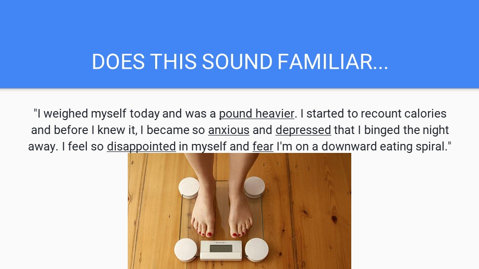
If you can relate to the above, even slightly, then listen up.
Most people that struggle with weight have something in common that they may not realize.
Being malnourished.
Whether it's a lack of emotional or physical nourishment. The key is to identify the root cause of a craving. Then steer away from some of the automated habits we've developed and replace them with better solutions.
The focus should always be on progress, not perfection.
Now when it comes to physical nourishment, one of the largest obstacles we are faced with is:
The grocery store!
I say that for three reasons:
1. Preservatives
2. Poor Soil Conditions
3. Engineered Fruits & Vegetables
Yes, this is the basis for my 3-step 'Eat to Lose' system.
Now we're going to dive deeper into each issue, and consider some solutions.
1. Preservatives
There are a ton of questionable synthetic additives put into our food and drinks. Everything from artificial coloring to flavoring to thickening agents.
And then there are preservatives, used to keep bad bacteria from causing food to spoil.
Just like the infamous twinkie that will never go bad.
This includes: Sodium Benzoate, Potassium Sorbate, Sulphur Dioxide, Sodium Nitrite
And you might be surprised to realize which products use preservatives...
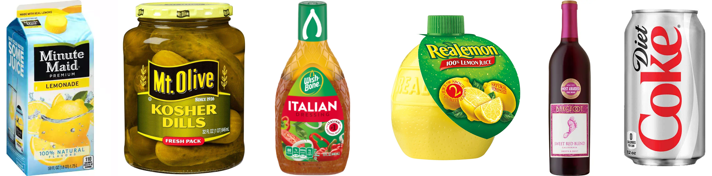
Preservatives make sense for the store to use... but how does this affect YOU, the consumer?
Preservatives work by killing bacteria to prevent mold... but they also kill your healthy gut bacteria, which is used to digest food.
If you don't fully breakdown and digest your food, then you can't fully absorb the nutrition from it.
It's like paying for groceries at the store, and then only coming home with half of them. Or less.
So that means you should be taking probiotics to replenish your gut bacteria. (in addition to minimizing or avoiding food & drinks with preservatives)
Even if you don't normally eat or drink something that contains preservatives, you should still consume probiotics.
The fact is we live in a mostly sterilized world. Meaning, the food in the grocery store and at restaurants has been treated so that most of the natural bacteria is removed.
Whether it's heat treated, irradiated or sprayed.
Contrast this with eating directly off a tree or from a garden. Fruits and vegetables naturally contain billions of bacteria from the air. If we ate off the land, then our gut bacteria would be taken care of.
But since we don't, we have to supplement this healthy-bacteria with probiotics or fermented food or drinks.
An easy way to do this, if I had to name just one product, would be this:
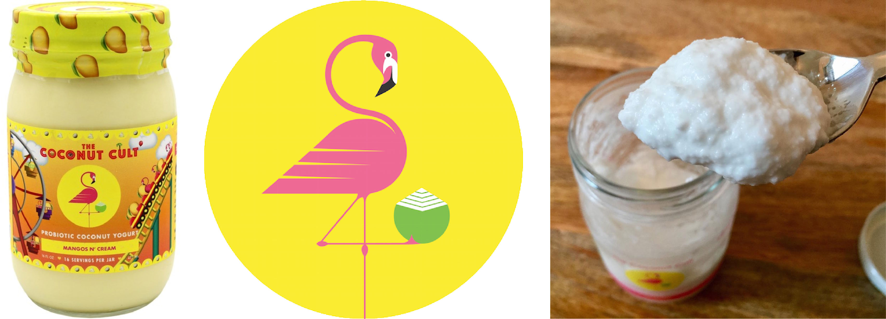
Fermented Coconut Meat.
No, I don't earn any profit from supporting this company. This is just something I personally use and love.
Typically I mix just a tablespoon in with regular coconut yogurt, since by itself this is very sour. After all, this does contain 16 different bacteria strains.
For comparison, most probiotic or fermented food only contain 1 or 2 strains. So a little of this will go a long way.
Now that we have the ability to digest nutrients covered... let's discuss what exactly are the nutrients you crave?
2. Poor Soil Conditions
Did you know, most fruits and vegetables are grown in soil that only contains 3 minerals?
NPK... Nitrogen, Phosphorus, and Potassium.
The problem is there are 87 more minerals we're missing out on.
87!
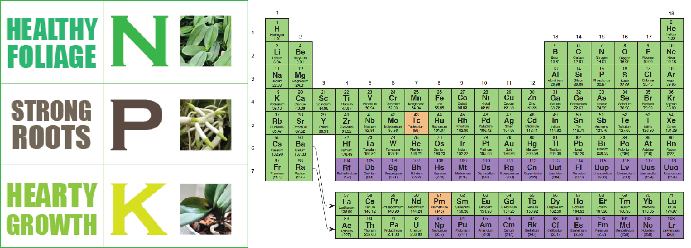
Side note: Electrolytes, found in sports drinks that claim special hydrating abilities, are just minerals. And minerals are one and the same with the elements on the periodic table (118 elements have been identified, but only 90 are naturally occuring).
Now here's the thing... plants cannot create minerals out of thin air. They must be grown in mineral-rich soil if they are going to be nutrient-dense. There is no way around this.
The food we buy in the grocery store is grown in poor soil conditions. If we want to be nice, then we can call the soil sub-optimal.
Meaning we're feeding our bodies sub-optimal nutrition even when we spend extra on the healthiest organic xyz vegetables at the grocery store.
I'm sure this must sound strange. Probably no one has ever mentioned this to you before. It certainly took me a while before this could really sink in.
The food at the grocery store is not enough to truly satisfy our cravings.
This is what causes us to overeat and snack between meals.
Our bodies are futilely trying to get the minerals it needs.
Even if you're the type that doesn't eat much, you might still have an issue with weight sticking to a particular part of your body.
Again the problem has to do with the quality of the food when you do eat.
It's like putting diesel fuel into a car's engine. We've been feeding our bodies the wrong source of fuel, so there's no way to function at 100%.
This has an effect on our immune system, making it easier for us to get sick.
If we check our blood work, most people end up being deficient in something.
This is one of the biggest reasons why you may be hungry all the time, yet still struggle with weight.
We're missing a food source grown in mineral-rich soil, like nature intended.
So now we need to find a source to supplement these minerals.
You might be considering vitamins, or even mineral pills. But here's the thing, we cannot absorb synthetic nutrients. We mostly pee them out.
It makes me laugh everytime I see a food is "fortified" or "enriched" with synthetic vitamins and minerals, as if it's a good thing.
Chewing on a bar of iron will do nothing for you. Even if you grind it into a powder and drank it with water, still nothing. Which is essentially how synthetic minerals get added to food. Especially if it says the word "oxide" after its name then it's a dead giveaway.
A plant has to first digest minerals through its roots in the soil before it becomes "bio-available" for humans to benefit from.
So the best source of minerals will always come from wild-grown plants. Also known as 'wild-crafted herbs.'
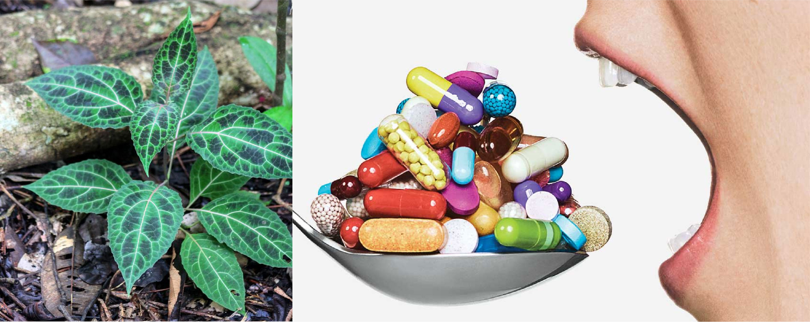
Now you tell me, which would you prefer?
A vitamin produced in a laboratory or a plant produced in nature?
This should be a no-brainer.
The trouble is that so-called "developed countries" have turned their backs on nature in favor of proprietary products that can be sold for much more money.
So most of us have never heard of the plants / herbs that can really benefit us.
But fear not, no need to get overwhelmed.
You only need to focus on a few to see if that's what your body has been craving.
This has the potential of helping your body function better than ever, and make losing weight easier.
Goodbye late night snacks.
The best part is the convenience and effectiveness.
No stress from having to memorize and prepare a time-consuming recipe for this to work.
And no disappointment from taking supplements that you can't even tell if its working.
(I have yet to hear someone tell me that they could actually feel the difference from taking a Vitamin D or Fish Oil pill for example.)
From my experience (and from what 50+ clients have told me) nothing else compares to the benefits that you see right away from using the RIGHT herbs.
Personally, the quality of my breathing has never been better.
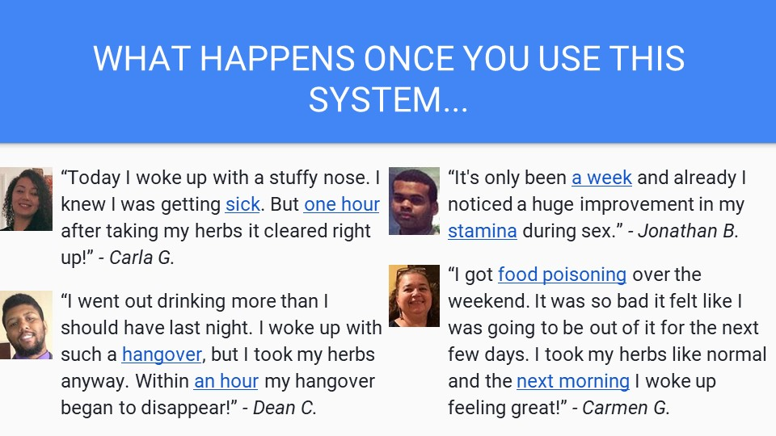
Now what are the herbs you should get started with (out of the 100+ that I work with)?
If you're trying to lose weight and not be hungry all the time, then these are the herbs you need to know about.
For energy, digestion, immune system, memory, focus, and for a true natural mood enhancer:
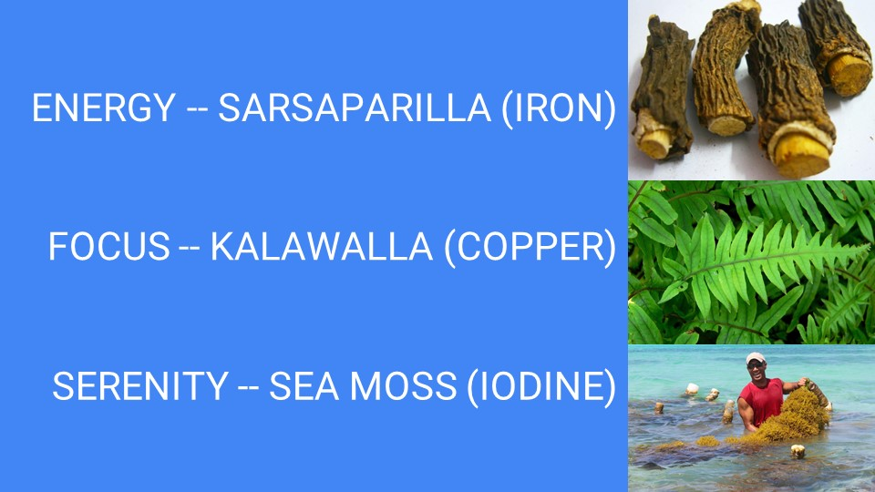
These three herbs will help you feel your greatest and make losing weight so much easier.
All because you'll be satisfying your cravings for the very first time.
Now, you might be thinking...
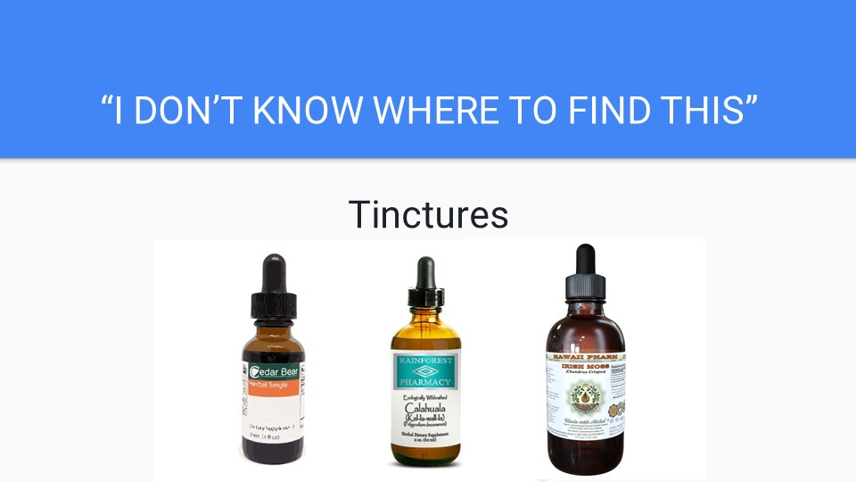
No need to worry.
All three herbs may be found online (including on Amazon.com), prepared as tinctures. (I'm still not getting any commission recommending these herbs or these companies.)
A tincture just means the herb is allowed to steep for at least a month in alcohol to create a liquid extract. (or more preferably vegetable glycerin to avoid the "sting" from alcohol on your tongue )
Think of it as a really, really strong herbal tea.
But because you take just a few drops, there isn't too much of a taste. (not to mention you don't have to wait around for any water to boil like you would with tea)
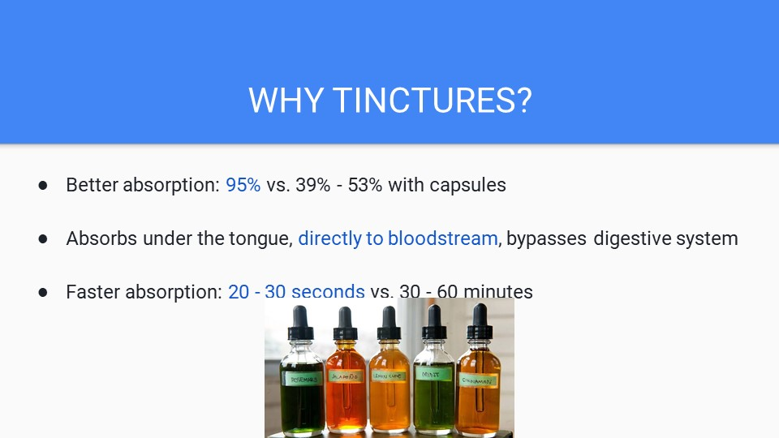
Because of the faster absorption rate that I mention in the above image, it's likely that you're going to be in disbelief the very first time you try these herbs.
That's because you notice the benefits right away, and they continue to get better the more you take.
I can't tell you how many reactions of disbelief I've gotten from clients on the first day or so. It never ceases to amaze me the stories people tell me of new ways these herbs have helped them.
For example:
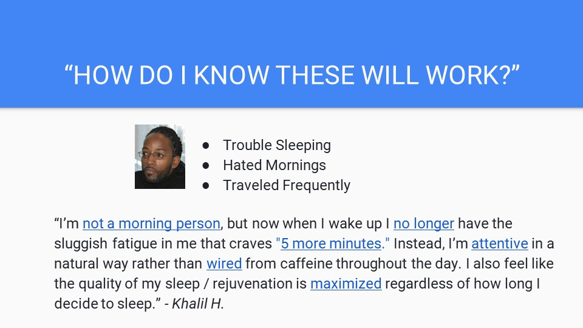
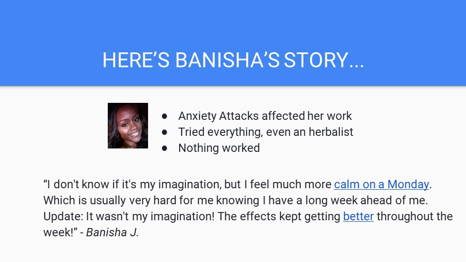
Now for the next and final step in this 3-Step System.
We've covered the importance of healthy gut bacteria to digest nutrients with probiotics.
And that those nutrients are best coming from the minerals found in wild-crafted herbs.
Now we shouldn't be hungry all the time, and have much better control over cravings.
After your body gets to adjust to the new nutrient-dense herbs... you're ready to detox and start losing fat (instead of water weight).
This is what you need to know about.
3. Engineered Fruits & Vegetables
Did you know this is what a banana is supposed to look like?
Just imagine how different all of the other food in the grocery store should look too.
The truth is GMO food is not just something recently invented.
Yes, it's gotten much worse with modern technology... but people have been modifying the genetics of plants for hundreds, even thousands of years.
Mostly through a method known as plant grafting. The main benefit of this is to get warmer climate crops to grow in colder climates. Also, to increase the size of fruit or to get it to grow without seeds.
Does this look natural to you?
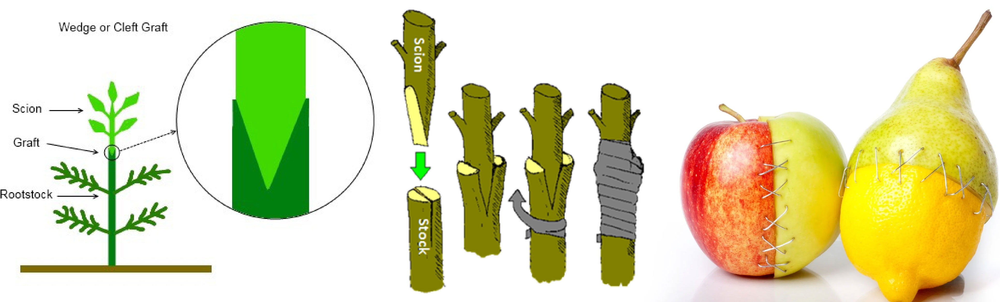
In the above image you can what "plant grafting" entails. Which is literally the process of cutting and taping together two different plants in order to create a new third plant.
The image on the far right is an exaggeration, but essentially that's what's being done. Our food starts to look like Frankenstein.
Now think about how many people are allergic or "sensitive" to gluten.
Did you know the wheat we eat today never existed thousands of years ago?
Our bodies know the difference. Most people that are sensitive to gluten have no issue eating its ancestor, Einkorn.

This alone might be game-changing for some.
Maybe you've already given up on wheat thanks to the low-carb or keto diet.
You've probably saw some great success from it too.
Now I challenge you to try einkorn, as long as you're not outright allergic to wheat.
You may be very surprised, like I was when I discovered I could eat it without getting tired.
Normally eating wheat makes me feel like I'm getting hit by a ton of bricks. That's how tired I become.
The thing is, hybrid / engineered food, is harder for us to digest and absorb nutrients from.
Now, let's say you eat a lot of meat instead.
Did you know the modern cow is an engineered animal thanks to selective breeding? The same process that turned a wild wolf into today's domestic dog.
Let's compare this to a natural animal like a buffalo. (side note: for some strange reason in the US buffalo meat gets labeled as bison meat)
Pound for pound, bison meat has around 30% less calories, 60% less fat, and 50% more protein than ground beef. It also contains more nutrients like: iron, zinc, vitamin B12, omega 3-fats, and selenium.
If that's not reason enough, then consider this. Because of federal laws and industry regulations, most bison meat sold in the U.S. is raised without antibiotics and hormones. And is usually grass-fed, unlike the GMO corn, soy and wheat the average cow is fed.
Think about that for a moment. Maybe you avoid eating GMO corn, soy and wheat... but you might be eating a cow that grew up eating that. It's a crazy world we live in, isn't it.
The other thing is, a lot of people take longer to digest meat than they might realize. This is why it's claimed eating protein curbs hunger, like sugar cravings. But the longer meat sits in the stomach, the greater chance it has to cause problems slowly over time.
In general, food needs to be digested and absorbed relatively quickly.
But if you do eat beef, then I challenge you to try Bison meat instead and see if you notice a difference. (this can be found at Whole Foods, certain restaurants or online)
The list of replacement foods goes on and on. Just know there's always a better alternative available. What's important is knowing which ones to focus on for your body.
In my program, Eat to Lose, I go over this in more detail.
But for now, let's talk about the best way to "clean" the body out.
To hit that reset button and jumpstart losing fat (not water weight).
You could try what's typically recommended...
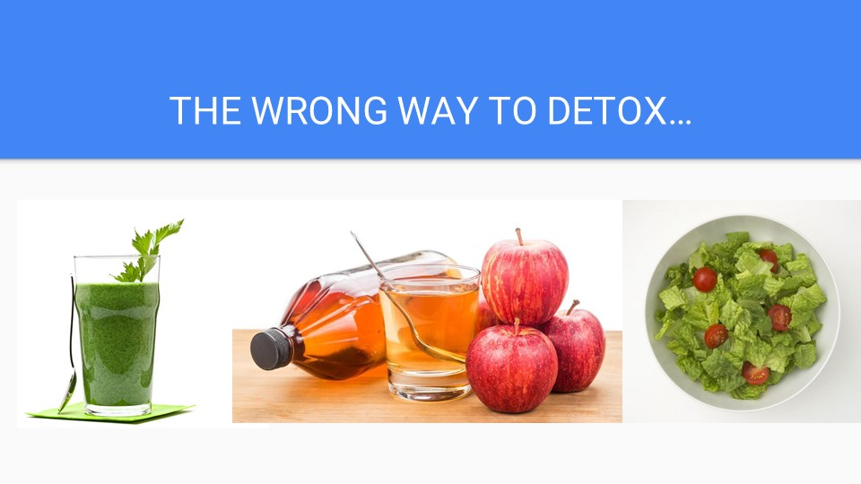
You could also even try intermittent fasting (which is great for some) or periodic fasting, where you fast an entire day or longer, every few months or so.
But that's not why you're here.
You already know about that stuff. And it could work up until a certain point if you actually did it.
But those methods are what I call, "working hard."
Here's how to "work smart."
The goal is to assist the function of the liver, kidneys, and colon.
And one of the safest and most effective herbs to do just that is called:
Quassia bark, also known as Bitter bark.
Luckily it comes as a tincture so you don't have to actually taste it.
It is called Bitter bark for a reason after all.
Now you may have already noticed on your own a trend of bitter tasting foods being excellent for digestion and at cleaning the body out.
Well, Quassia sits among the very best in that category.
The same is also true for "spicy" food.
The best option being the pepper that contains the oldest genetics.
Can you see it?
No? Look closer. On the far right is a little red sphere.
That is one of the ancestors of modern peppers. The original pepper.
Known as the Tepin Pepper.
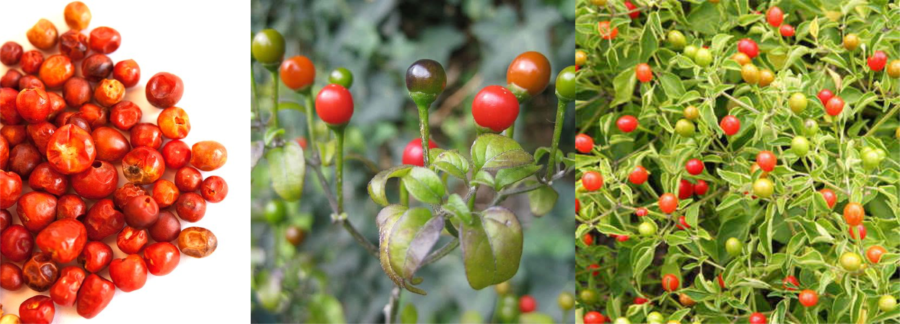
Try adding just a few of these peppers to any dish to help you burn fat while you eat.
Much better than iodized salt and stale black pepper will do for you.
Just get ready to also blow your nose if you're congested. Out with the bad and in with the good.
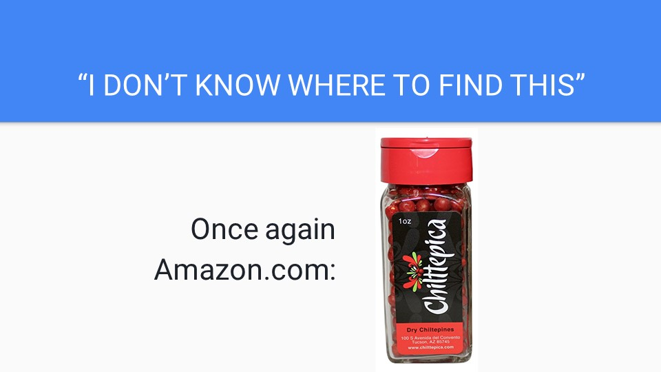
Now, you might be thinking this can't compare to sweating it out at the gym or investing your time in some weekend meal prepping.
That's what I thought at least. But the food I've mentioned so far is special.
And very convenient so you can actually stay consistent no matter how busy your routine may be.
The reality is you might not always have time for the gym or planning every meal. Life happens.
But weight loss doesn't have to be reserved for people with time. (or for people with the "right" genes or hormones)
There's no need to feel guilty about having other life responsibilities.
Even if you did the bare minimum, by trying some of the food I suggested above, then you have already given yourself a head start that your body will thank you for.
Now I encourage you to download the cheat sheet below to start getting results for yourself.
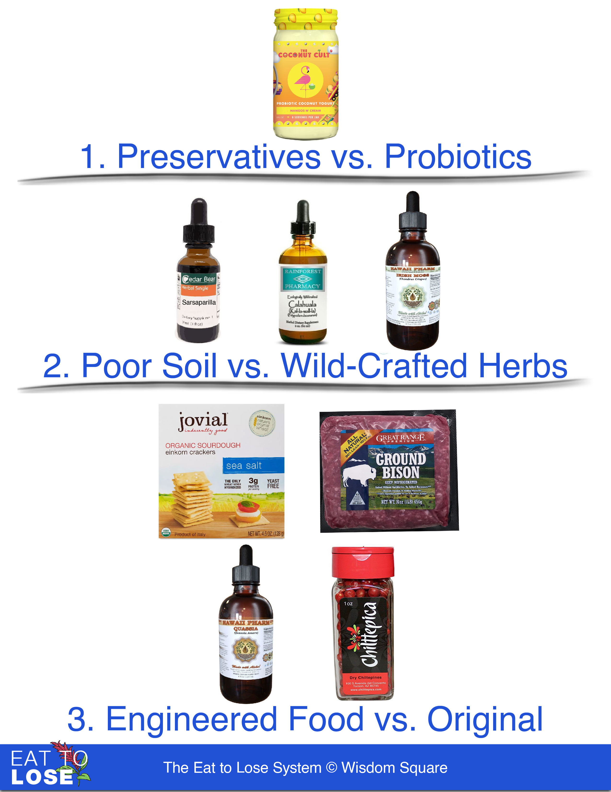
(right click to save or long press to save if you're on a mobile device)We covered a lot just now. I thank you for sticking around and making it to the bottom of the page.
The one thing I don't want is for you to lose momentum. That's why I'm offering a temporary bonus for new sign-ups to my 7-week program called:
"Eat to Lose"
The bonus includes a follow up check-in 1 month after the program has concluded to make sure what you learn sticks and develops into new habits. Any questions you may have, I personally answer one-on-one.
So don't wait.
Click below to join. I'll see you inside the program!